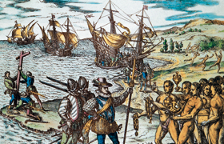

Lezione 10  Scoperte Geografiche
Scoperte Geografiche

Cristoforo Colombo scrive a Luìs De Santàngel e a Gabriel Sànchez, rispettivamente il cancelliere e il tesoriere generale del Re Ferdinando di Aragona, poco dopo aver scoperto le nuove terre.
E’ il primo annuncio dell’impresa compiuta. Colombo è convinto di essere giunto nelle Indie. Descrive i luoghi che vede, e descrive uno dei primi incontri avuti con le popolazioni del Nuovo Mondo, così diverse dagli uomini che aveva sempre conosciuto, eppure uomini.
«In trentatré giorni passai dalle isole Canarie alle Indie con l’armata che gli illustrissimi Re e Regina nostri signori mi affidarono. Ho scoperto moltissime isole popolate da gente innumerevole, e di esse ho preso possesso in nome delle Loro Altezze, con bando e bandiera reale spiegata, senza trovare resistenza. Alla prima che trovai posi nome “San Salvatore” a ricordo della divina Maestà, che miracolosamente ci ha concesso tutto questo: gli Indiani la chiamano “Guanahanì”; alla seconda posi nome “Isola di Santa Maria della Concezione”; alla terza “Fernandina”; alla quarta “Isabella”; alla quinta “Isola Giovanna”, e così a ciascuna diedi un nome nuovo.
Quando giunsi alla Giovanna, ne seguii la costa verso ponente, e la trovai tanto grande, che pensai fosse terra ferma, cioè la provincia del Catai. E siccome non trovai né città né villaggi sulla costa del mare, salvo piccoli borghi, con la gente con cui non potevo scambiar parola, perché subito tutti fuggivano, così andavo innanzi per quella rotta, pensando che, se c’erano grandi città o villaggi, non avrei mancato di scorgerli. […]
Vidi un’altra isola ad oriente, distante da questa diciotto leghe, alla quale posi poi nome “la Spagnola”, e lì mi diressi. […] Le sue terre sono elevate, e mostra molte catene di montagne con cime altissime, senza confronto con quelle dell’isola di Teneriffa: e tutte bellissime, di mille forme, e tutte accessibili e piene di alberi di mille specie, e di tale altezza che sembrano toccare il cielo; e mi è stato detto che non perdono mai le foglie, e bene lo posso comprendere, poiché li ho visti tanto verdi e belli come sono di maggio in Ispagna, e alcuni erano in fiore, altri col frutto, altri in un’altra fase, secondo la specie; e gli usignoli e mille altri uccelletti diversi cantavano nel mese di novembre, quando io mi trovavo laggiù […].
Gli abitanti di quest’isola e di tutte le altre che ho scoperto o di cui ho avuto notizia vanno tutti nudi, uomini e donne, così come le loro madri li mettono al mondo, anche se alcune donne si coprono una sola parte del corpo con una foglia o una pezzuola di cotone che preparano a tale scopo. Non hanno ferro, né acciaio, né armi, e non vi sono tagliati, non già perché non siano gente robusta o di bella statura, ma per il fatto che sono incredibilmente paurosi. Non hanno altre armi fuor di quelle che si fabbricano con canne ormai secche dopo essere andate in semenza, sulla cui estremità conficcano un bastoncino aguzzo. E non osano servirsene, ché molte volte mi è accaduto d’inviare a terra due o tre uomini in qualche villaggio per trarre informazioni e di scorgerne un numero sterminato uscire loro incontro: ma, non appena li vedevano arrivare, fuggivano come impazziti, e questo non perché si fosse fatto del male a persona; anzi, in ogni luogo dove sono stato e dove ho potuto scambiar parola, ho dato loro tutto quanto avevo, come stoffa e molti altri oggetti, senza ricevere in cambio cosa alcuna; ma sono proprio così paurosi senza rimedio.
La verità è che, dopo che si sono rassicurati e hanno deposto questo timore, sono tanto privi di malizia e tanto liberali di quanto posseggono, che non lo può credere chi non l’ha visto. Qualunque sia la cosa in loro mano che venga ad essi richiesta, non dicono mai di no; anzi, invogliano le persone a chiederla e si mostrano tanto amorevoli, che darebbero il cuore stesso e, si tratti di cosa di valore, oppure di poco prezzo, la cedono in cambio di un oggetto qualsiasi e se ne tengono paghi. Io vietai che si dessero loro cose tanto vili come cocci di scodelle e frammenti di vetri rotti e pezzetti di nastro, sebbene, quando essi potevano giungere a tanto, sembrasse loro di possedere la più splendida gemma del mondo. E’ accaduto che un marinaio in cambio d’un nastro ricevette oro per il peso di due castigliani e mezzo (una moneta d’oro coniata dal Re Ferdinando), e altri ottennero molto di più per oggetti che valevano anche meno; […] Prendevano persino i pezzi degli archi rotti e dei barili e davano quello che avevano, senza discernimento, come bestie: tanto che mi parve male, e lo proibii, e io stesso donavo loro mille oggetti graziosi e utili che avevo portato con me, perché si affezionino, e di conseguenza si facciano cristiani, e siano inclini alla devozione e al servizio delle Loro Altezze e di tutta la nazione castigliana, e procurino di raccogliere e consegnarci i prodotti di cui abbondano e che ci sono necessari».
(Cristoforo Colombo a Luìs De Santàngel e a Gabriel Sànchez, in I Navigatori. La scoperta dell’America nelle lettere di Colombo, De Cuneo, Vespucci, Verazzano, a cura di Mario Farina, Loescher, Torino, 1975)